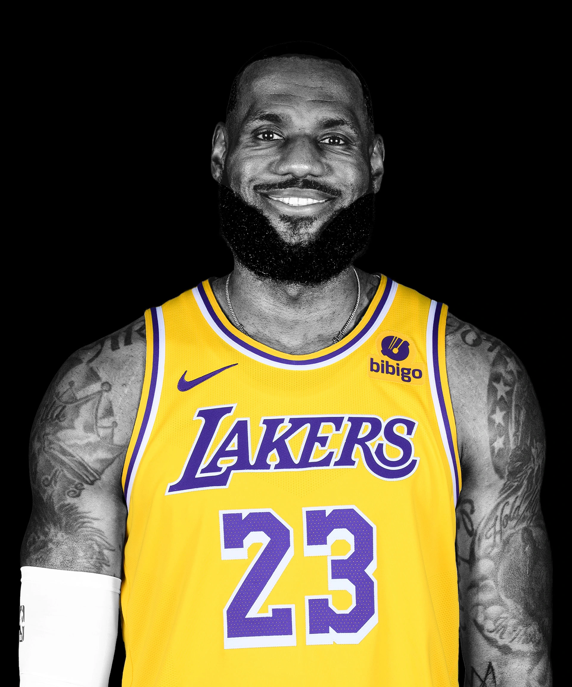
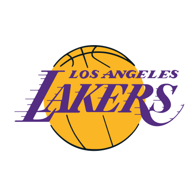
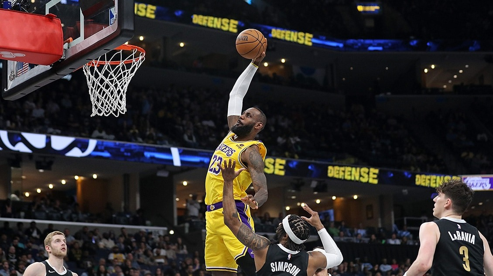
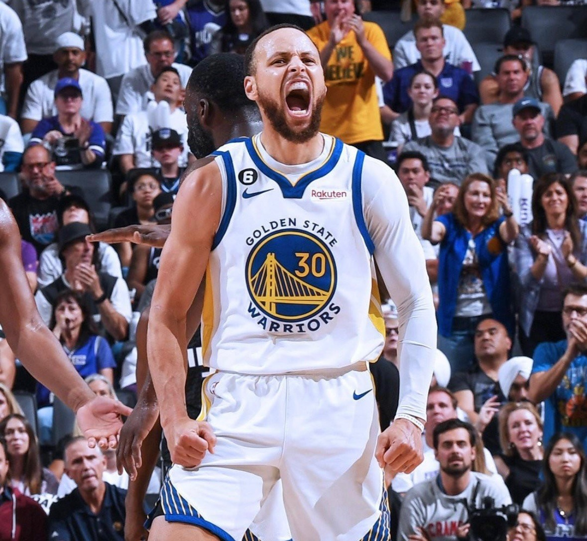
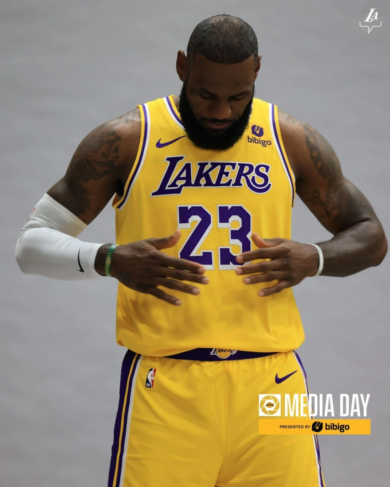
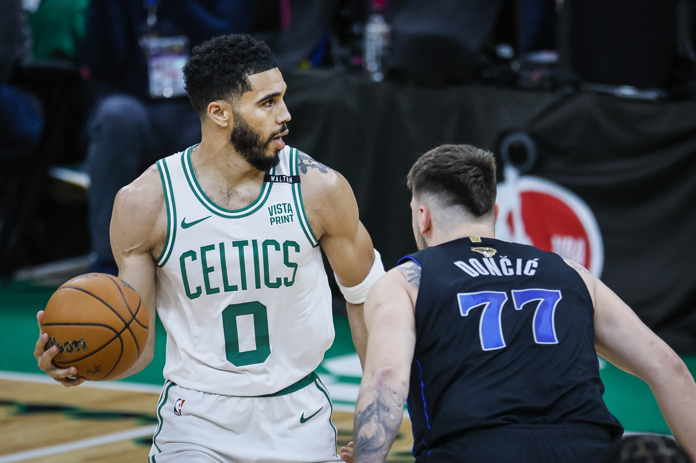
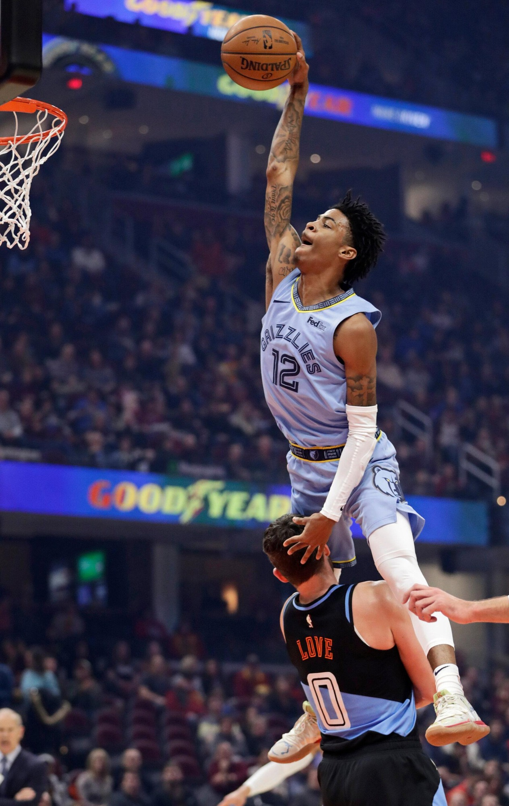
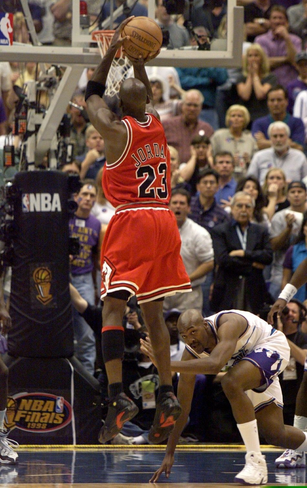
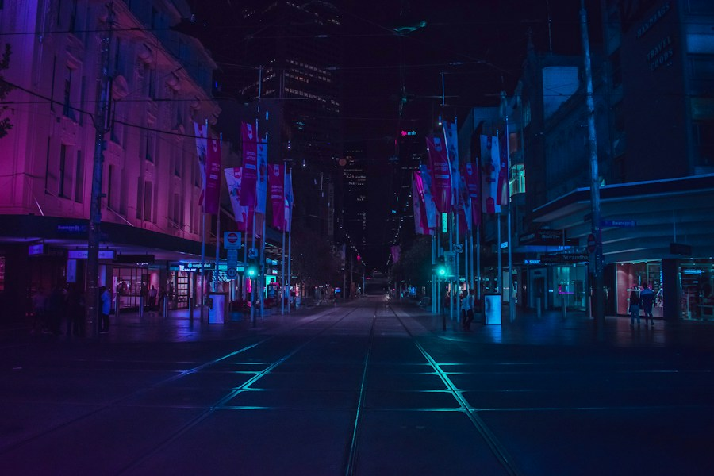

THE HOME OF REAL FANSVOL. 01 / A LOVE THAT NEVER STOPS
HOMECOURT.

LEBRON JAMESTHE ARCHIVE / NO.23
✳
FEATURED GAME ↗Some call it a game.
We call it everything.

VS
01 / A COLLECTIVE OBSESSIONTHE MOMENTS WE LIVE FOR
FROM COURTSIDE TO YOUR SIDE.
IT'S NEVER
JUST a game.
总有一个瞬间，让你爱上篮球。
总有一群人，和你记到现在。



A NOTE FROM THE COMMUNITY
— EVERY JR, EVERYWHERE.
We remember
the feeling.
Not just the score.
— EVERY JR, EVERYWHERE.





02 / THE THREADS THAT CONNECT US16 TEAMS. ENDLESS STORIES.
Worn with pride.JERSEYS
JERSEYS
HALL OF FAME®
✳
A city. A colour. A lifetime of loyalty.
Every jersey has a story.
Find the one that feels like home.
THE ICON ARCHIVE / HISTORIC THREADSYOUR COLOURS. YOUR CITY. YOUR COURT.
01 / UNDER THE LIGHTS
ON
court.
Every play. Every point.
Every opinion counts.
02 / BEYOND THE BUZZER
IN
community.
Real fans. Real talk.
This is where we belong.
03 / THE CONVERSATION NEVER STOPS JR'S ARE TALKING
THE TALK
of the court.
Big moments. Bigger conversations.
今天的热爱，今天聊。课堂概念内容 · 热度、讨论与赛程均为演示数据
THE PULSE OF A COMMUNITYILLUSTRATIVE COMMUNITY DATA
ALL OF US.
All in.
0+HOT THREADS / 今日热帖
0万ONLINE FANS / 在线 JR
0万CONVERSATIONS / 今日讨论
04 / THE FINAL WHISTLE IS YOURSCLASSIC MATCHUPS / DEMO EDITION
GAME DAY.
Your say.
The players bring the game.
You bring the verdict.
THE FAN VERDICT
本场球员评分
评分保存在当前浏览器。数据与球衣归属采用经典对阵档案，不代表实时赛程。
Your voice. Your game.NO HOT TAKES LEFT BEHIND. ↗
05 / GOOD COMPANY. GREAT ENERGY.CONCEPT COLLABORATIONS
CULTURE
& connections.
Performance meets possibility.
Made for a world beyond the game.
品牌文化灵感墙 · 课堂视觉演示，不表示实际合作关系
A MILLION DIFFERENT STORIES.
ONE community.
加入讨论 ↗